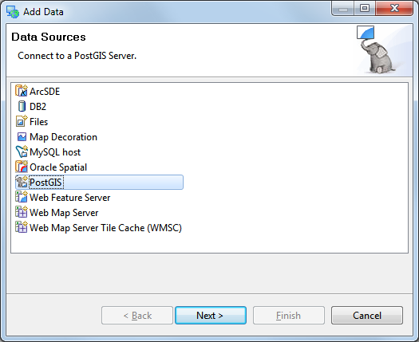
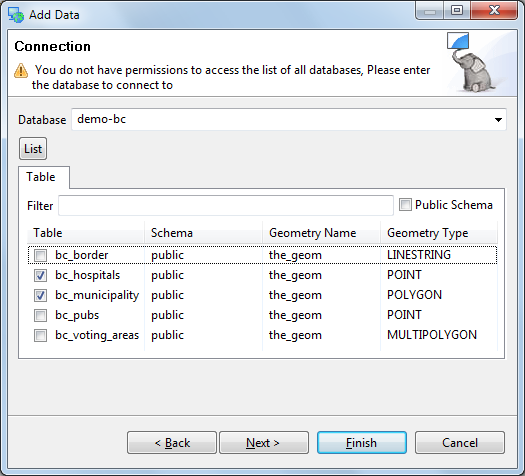

Adding a Layer from PostGIS¶
Note
This section requires your own local PostGIS. While we have a public PostGIS available for demonstrations most corporate environments are unable to access this database due to firewall restrictions.
If you are trapped behind a firewall please feel free to skip this section.
The online help does have some advice about Running uDig covering firewall access.
This section shows how you can add a Layer from a PostGIS table. PostGIS is an extension to the popular open source PostgreSQL database. uDig handles other databases like Oracle and DB2 in a similar manner:
Select File ‣ New ‣ New Map from the menu.

In the Projects view, right-click on your map and select Add.

Select PostGIS as the data source and click Next.

Enter the following connection information:
- Host: www.refractions.net
- Port: 5432
- Username: demo
- Password: demo
- Store Password: check
Once the connection information is entered press Next.

This page lists the databases available to the current user.
The www.refractions.net database does not publish a public list so rather than choose from a nice easy list we are going to have to enter in demo-bc by hand.
- Database: demo-bc

We can now press the List button to list the available tables. Please choose
- bc_hospitals
- bc_municipality
Press Next when ready.
The resource collection page confirms that bc_hospitals and bc_municipality are published as spatial layers.
We can press Finish to add these layers to our Map.

It may take a short while to fully render since you are zoomed out so far.
Head on over the the Layer view and right click on bc_hospitals layer and choose Zoom to Layer

The map will now zoom in to show the extent of the bc_hospitals layer.
You can return to your previous position in the world by selecting Back in the Navigation menu.